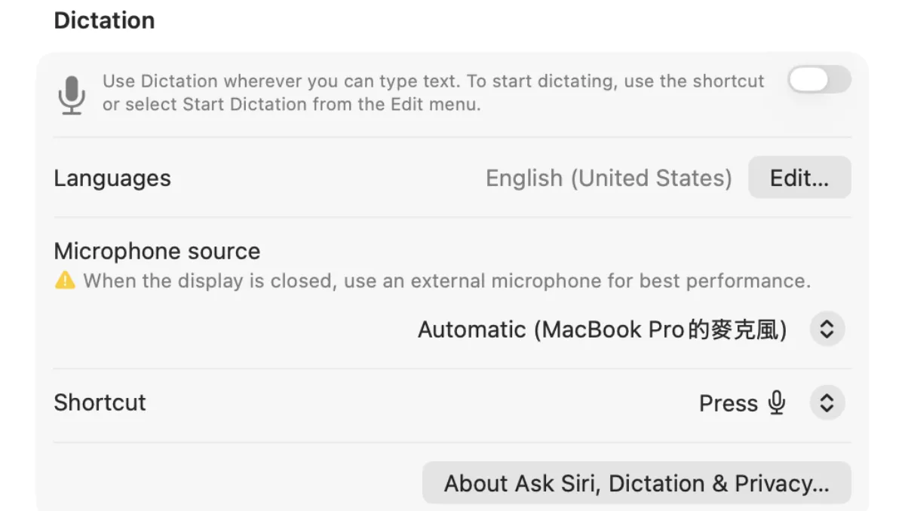
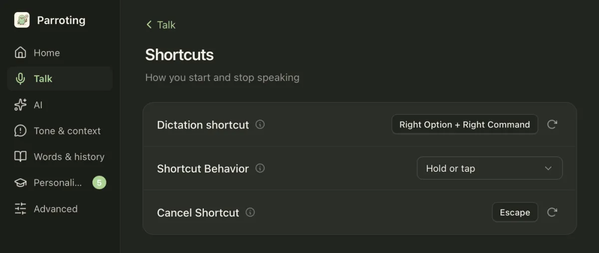
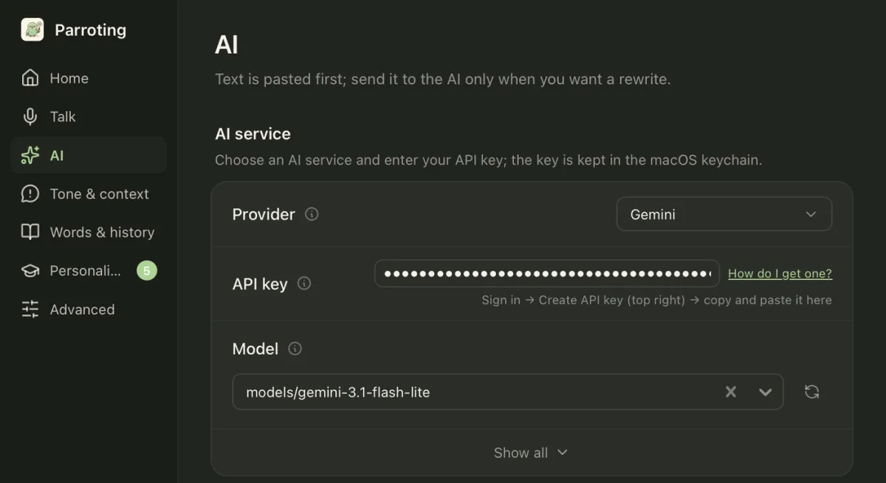
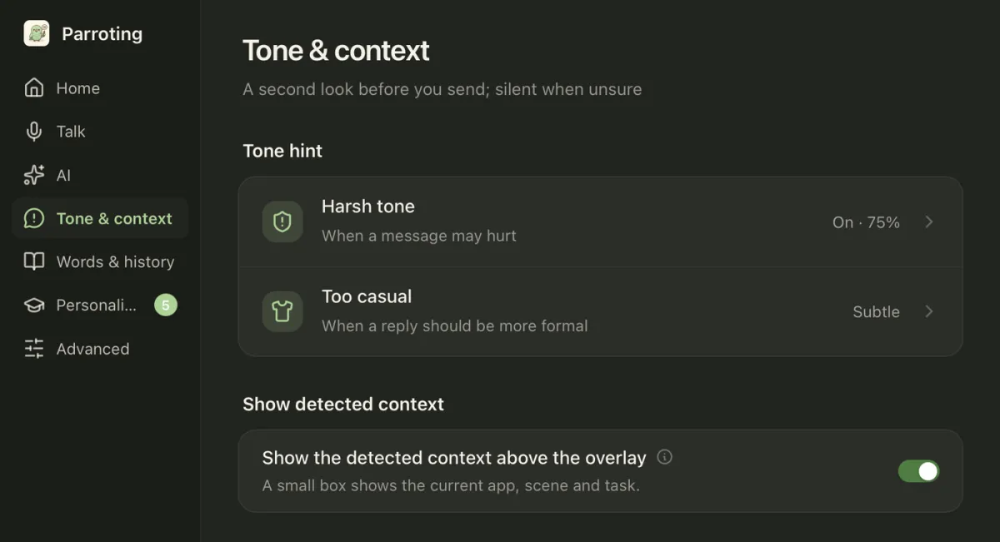
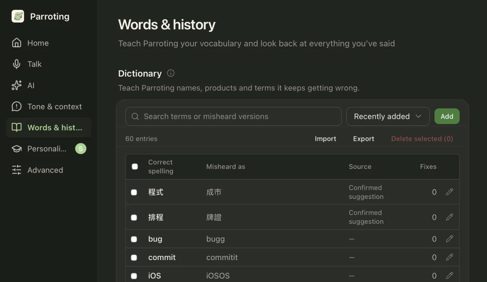
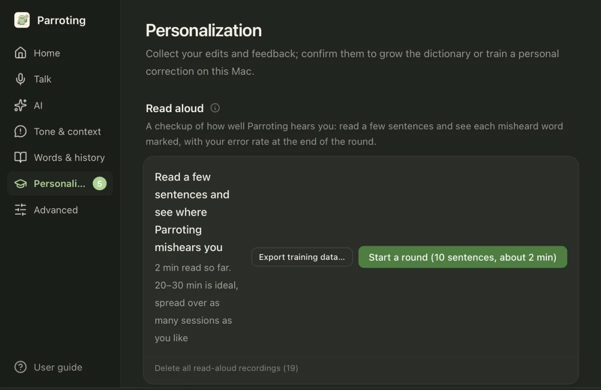

iPhoneのカメラでスキャンParroting iPhone版 · 買い切り800円
iPhoneのカメラでスキャンParroting iPhone版 · 買い切り800円
1. まずmacOS標準の音声入力を試す
短い文をたまに音声入力するだけなら、まず「システム設定」で「音声入力」を検索し、画面に従って有効にします。次に、メモやMailのテキスト欄で設定したショートカットを使います。言語の選択肢、ショートカット、ネットワーク接続の要件はmacOSのバージョンによって異なります。お使いのMacに表示される内容を確認してください。短文をたまに入力するなら、標準機能で足りる場合もあります。

2. 大量の入力：押して話し、離して貼り付ける
毎日いくつものAppで返信するとき、別のアプリで文字起こしをして元のウインドウにコピーするのは手間です。Parrotingでは右Option + 右Commandを押しながら話し、離すと現在のカーソル位置に文字を貼り付けられます。「連続音声入力」にも対応しています。初回はmacOSの案内に従って必要な権限を許可してください。使うAppで動作するかも実際に確かめましょう。

3. 言いよどみや言い直しを整理する
自然に話すと、「呃、那個」（「ええと、その」のような言いよどみ）が入ったり、途中で時間を言い直したりします。例えば「明天三點開會，不對，三點半，資料今晚寄給你」（明日の会議を3時から3時半に言い直し、資料は今夜送るという発話）なら、整理後は「明天三點半開會，資料今晚寄給你」（会議は明日3時半、資料は今夜送るという文）が理想です。これは説明用の例で、実測結果ではありません。Parrotingでは「AIで話し言葉を整える」を有効にして、読みやすい文章にできます。重要な日付、金額、名前は自分で確認してください。
4. 中国語で話して英語の文章にする
英語のメールを書いたり海外の同僚と連絡したりするとき、中国語で入力してから翻訳ツールを開き、英語をコピーして元のウインドウに戻るのは手間です。Parrotingの「翻訳」書き換え形式では、認識した中国語を英語に変換し、確認してから文章を置き換えられます。音声認識とAI翻訳は別の処理です。翻訳には、自分でAIサービスとAPIキーを設定する必要がある場合があります。

5. 送信前に口調を確認する
例えば「你怎麼又沒交資料？」（なぜまた資料を出していないのかと責める表現）は、相手を責めているように聞こえます。「想確認資料進度，方便告訴我預計什麼時候完成嗎？」（資料の進み具合と完了予定を尋ねる表現）なら、用件に焦点を当てやすくなります。Parrotingの「口調ヒント」と書き換え提案では、感情の強さや丁寧さを調整できます。提案を編集しても、採用しなくてもかまいません。正しいかどうかを代わりに判断する機能ではありません。

6. 人名や固有名詞の誤認識を減らす
音声認識では、同音の人名、製品名、中国語と英語が混ざった語を間違えることがあります。Parrotingには個人用の「辞書」、修正を確認する仕組み、このMac上で行う「パーソナライズ学習」があります。使いながら自分の語彙を蓄積できます。パーソナライズしても誤字がなくなるわけではありません。よく使う語をいくつか試し、どれだけ改善するか確かめてください。


7. 自分に合う方法を選ぶ
たまに入力するなら、まずmacOS標準の音声入力を試しましょう。複数のAppで大量に入力するなら、ホットキーと連続音声入力を比べてください。翻訳や話し言葉の整理をよく使うなら、「AI書き換え」で時間を節約できるか確かめましょう。Parrotingの音声認識とパーソナライズ学習は主にMac上で行います。「AI書き換え」を使うと、設定した外部サービスに文章が送られる場合があります。現在提供しているのはAppleシリコン搭載Mac向けで、macOS 11以降に対応しています。